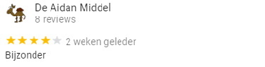

- 
Waarom is het LAM zo leuk ?
Het LAM is hét foodart museum in de wereld. Gloednieuw en bomvol internationale topstukken. Het LAM is vooral ook een innovatief en persoonlijk museum dat je anders laat kijken. Voor alle leeftijden, en dan bedoelen we ook echt álle leeftijden. Met onze super persoonlijke aanpak krijg je altijd een kunstervaring op maat.